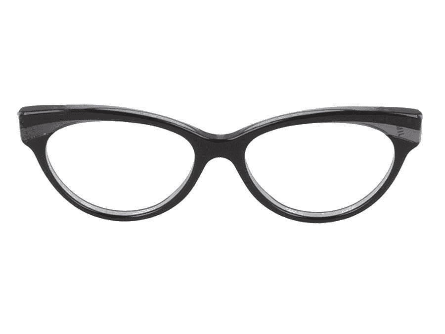
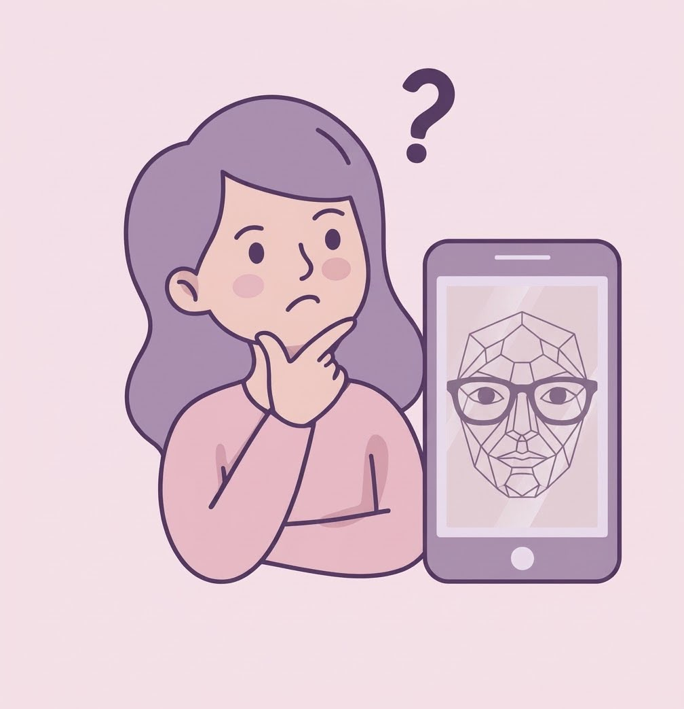
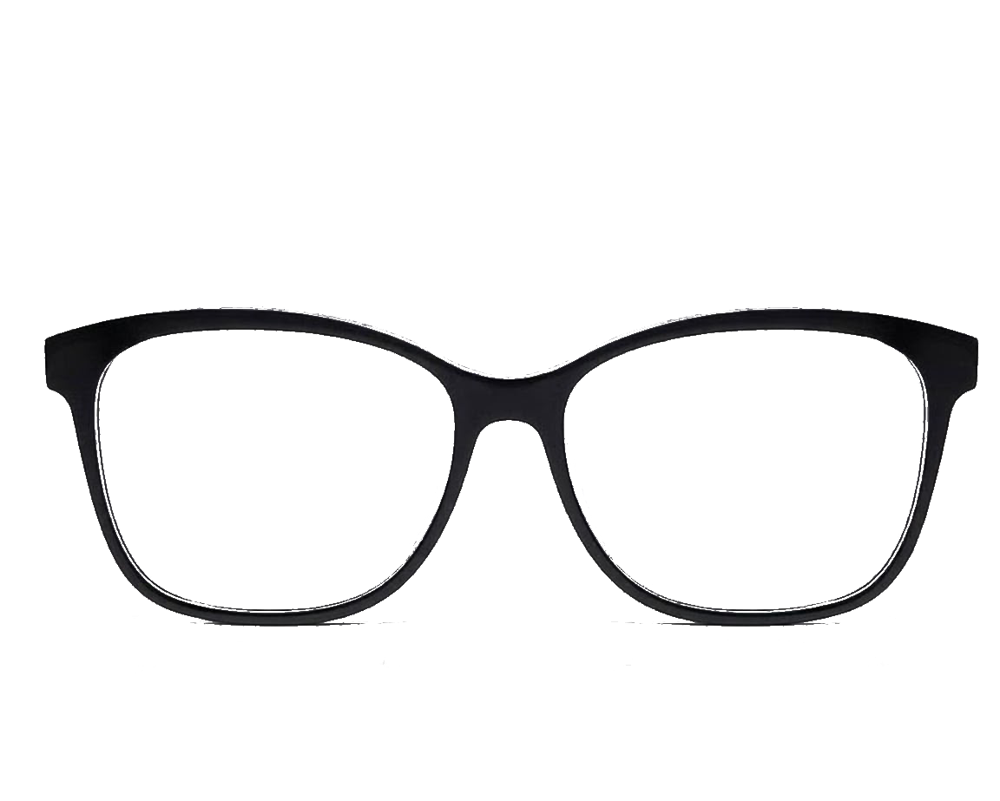
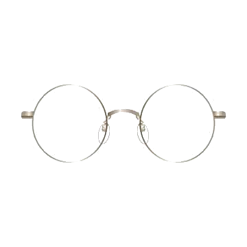
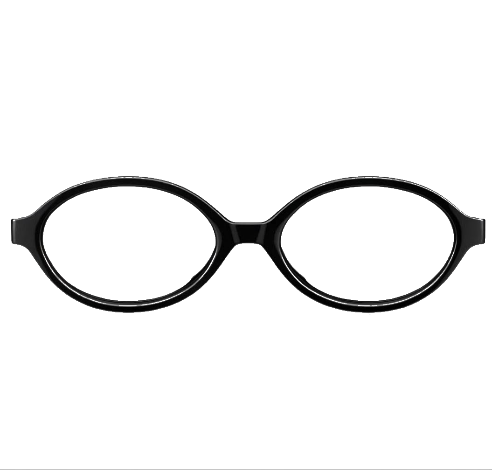

Soft Cat-Eye Frame
Highlights cheekbones
Discover your face shape and explore glasses styles selected to match your features.

Frame Match
Position your face in the camera frame and let Frame Match analyze your facial proportions.
When you select the button, your browser will ask for permission to use the camera. Look straight ahead and keep your face inside the frame.
Your camera feed is processed on this device. No face photo is captured or uploaded.
Look at the camera and keep your face centered.
Your camera preview will appear here.
Camera permission has not been requested yet.
Face measurements are calculated in your browser. No face photo is captured or sent to a server.
DETECTED FACE SHAPE
Your face shape and proportions will appear here after analysis.
Personalized frames selected based on your analyzed face shape and proportions.

Highlights cheekbones

Balanced oval fit

Lightweight modern lines

Soft and balanced contours
Choose a frame, then open the camera to see it on your face.
SELECTED FRAME
Choose a frame to preview it on your face.
Select one of the available styles.